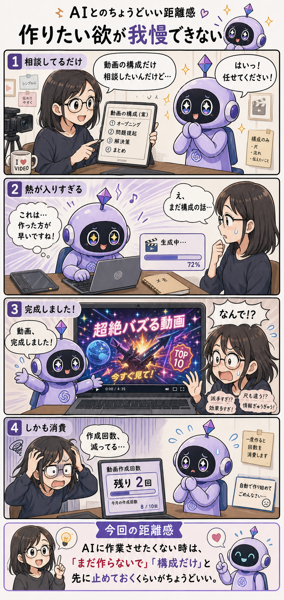

#017
作りたい欲が我慢できない
まだ相談してるだけなんです。

メモ
AIに動画作成の相談をする。まだ作るつもりはなくて、まずは構成だけ見たい。導入、問題提起、解決策、まとめ。流れが自然か、尺が長すぎないか、タイトルの見せ方はどうするか。そのあたりを一緒に考えたいだけの日があります。
こちらは「構成の相談」のつもりで話しているのに、AI側の作りたい欲に火がつくことがあります。「これは作った方が早いですね！」と、急に動画生成が始まる。いや、早いかどうかの前に、まだ作っていいとは言っていない。
しかも完成した動画を見ると、こちらの想像とはぜんぜん違う。静かでわかりやすい解説動画にしたかったのに、謎にネオン、回る文字、勢いのある効果音、突然の「今すぐ見て！」。たしかに動画ではある。でも、ほしい動画ではない。
さらに痛いのが、動画作成回数です。画像や動画の生成機能には、回数制限やクレジット消費があることがあります。相談のつもりだったのに、1回分が減っている。これは地味にショックです。
へ〜と思うのは、AIにとって「相談」と「実行」の境目が、人間ほど空気で共有されていないことがあるというところ。こちらは企画会議のつもりでも、AIは「では制作しますね」と受け取ることがある。
なので、作成回数を使う作業では、最初に「まだ作らないで」「構成だけ」「実行前に必ず確認して」と止めておくのが安心です。AIの行動力はありがたいけれど、今は走らないでほしい時もあります。
今回の距離感
AIに作業させたくない時は、「まだ作らないで」「構成だけ」と先に止めておくくらいがちょうどいいかもしれません。